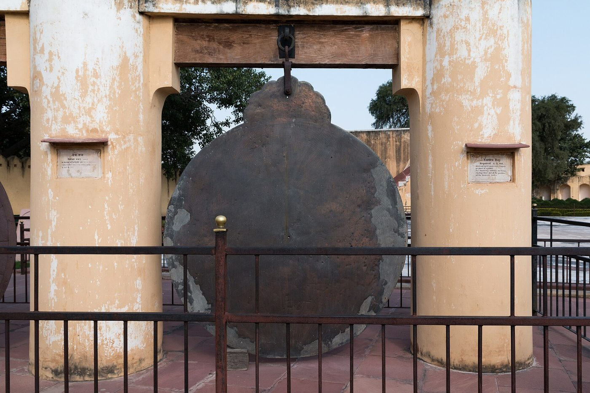

Chapter 12: Exchanges: India and the Mathematical Sciences of Other Cultures¶
Mathematical knowledge travelled in both directions across the borders of India. Indian astronomy absorbed Mesopotamian and Hellenistic ideas in the early centuries CE and transformed them; Indian numerals, arithmetic and astronomy passed to the Islamic world in the eighth century and through it to Europe; Indian astronomy reached China and Southeast Asia; and from the fourteenth century Islamic astronomy and mathematics, and later European science, came to India in their turn, through the courts of the Delhi Sultanate, the Mughals and the Rajput kings. This chapter surveys these exchanges, keeping to what the evidence shows (Plofker 2009; Pingree 1981).
12.1 What India Received¶
12.1.1 Mesopotamia and the early calendar¶
The Vedāṅga Jyotiṣa, the earliest Indian text on calendrical astronomy (probably composed in the last centuries BCE, although some scholars place it much earlier), describes a five-year cycle of 1830 days with 62 synodic months, and uses simple linear rules for the length of daylight. David Pingree argued that some of its methods resemble those of Mesopotamian astronomy; others have stressed its independence. The question is unresolved (Pingree 1981; Plofker 2009).
12.1.2 Hellenistic astronomy and astrology¶
The evidence for Greek influence in the early centuries CE is much clearer. The Yavanajātaka (“Horoscopy of the Greeks”), a Sanskrit verse version of a Greek astrological text, introduced the twelve signs of the zodiac, the planetary houses and a body of technical vocabulary borrowed from Greek: horā (Greek hōra), kendra (kentron, “centre”), liptā (leptē, “minute of arc”), drekkāṇa (dekanos) and the Greek names of the zodiacal signs. Varāhamihira’s Pañcasiddhāntikā (mid-6th century) summarises five astronomical systems current in his time, two of which, the Romaka and Pauliśa, show Hellenistic origins in their names and methods. From these sources Indian astronomers took the geometrical models of planetary motion with epicycles and eccentrics, the division of the circle into 360 degrees and 21,600 minutes, and the idea of computing positions from tables of a trigonometric function (Pingree 1981; Plofker 2009).
12.1.3 From chords to sines¶
The clearest example of transformation is trigonometry. Hellenistic astronomers computed with the chord of an arc: Ptolemy’s Almagest (2nd century CE) tabulates chords for every half-degree in a circle of radius 60, in sexagesimal fractions. The Indian sine is half the chord of twice the arc, \(R\sin\theta = \tfrac12\,\mathrm{crd}(2\theta)\). G. J. Toomer argued that the lost chord table of Hipparchus (2nd century BCE) used intervals of \(7\tfrac12^\circ\) and a radius of 3438 units; if so, Āryabhaṭa’s table of sines at intervals of \(3\tfrac34^\circ\) with the same radius is exactly the table of half-chords derived from it. Whether or not this reconstruction is right, the Indian step of tabulating the half-chord directly, and of developing the cosine and versed sine alongside it, was a genuine simplification that became standard in later astronomy everywhere (Toomer 1973; Van Brummelen 2009; Plofker 2009; Pingree 1981).
Chord and sine
In a circle of radius \(R\), the chord of an arc \(2\theta\) is \(\mathrm{crd}(2\theta) = 2R\sin\theta\). With Ptolemy’s radius \(R = 60\), the chord of \(60^\circ\) is 60 (the side of the inscribed hexagon), and the sine of \(30^\circ\) is half of it, 30. With Varāhamihira’s radius \(R = 120\) the sine of \(30^\circ\) is 60; with Āryabhaṭa’s \(R = 3438\) it is 1719. Ptolemy’s value \(\pi \approx 3;8,30\) in sexagesimal notation is \(3 + \tfrac{8}{60} + \tfrac{30}{3600} = 3.14167\).
Indian astronomers did not simply copy these models. They replaced the chord by the sine, recast the parameters within their own cosmic time-cycles, developed new computational procedures, and over the following centuries made the subject their own. The relationship is one of transmission followed by independent development, much as Greek astronomy had itself drawn on Babylonian observations and methods.
12.2 From India to the Islamic World¶
12.2.1 Astronomy¶
Indian astronomy reached the Islamic world early. The Zīj al-Arkand, an Arabic astronomical table compiled in Sind in 735, was based on Brahmagupta’s Khaṇḍakhādyaka; its title is the Arabic form of ahargaṇa, the Indian count of days. Around 770–773, an embassy from Sind to the court of the caliph al-Manṣūr in Baghdad included an Indian astronomer, with whose help an astronomical work of the school of Brahmagupta was translated into Arabic. The resulting works of Muḥammad ibn Ibrāhīm al-Fazārī and Yaʿqūb ibn Ṭāriq, known as the Zīj al-Sindhind (from siddhānta), survive only in fragments and quotations. Muḥammad ibn Mūsā al-Khwārizmī prepared his own Zīj al-Sindhind around 830, combining Indian methods and parameters with others; it survives in a Latin translation made by Adelard of Bath in 1126 from a Spanish revision (Pingree 1981; Plofker 2009).
Through these works the Indian sine entered Islamic astronomy, and with it the word jība (Chapter 3). Indian astronomy also used tables of the shadow of a gnomon for given altitudes of the Sun, and the “shadow” function (the cotangent, in modern terms) became in Islamic astronomy one of the starting points for the tangent and cotangent functions. Islamic astronomers soon went further, under the influence of Ptolemy, whose works were translated in the ninth century, and through their own research: they introduced the tangent and other functions, proved the sine theorem for spherical triangles, and computed far more accurate tables. Indian elements were thus one important ingredient in a new synthesis, not its whole (Gutas 1998; Katz 2009).
12.2.2 Numerals and arithmetic¶
The Indian numerals and their methods of calculation were adopted in Arabic arithmetic from the late eighth century, and Arabic authors consistently called them “Indian”: al-Khwārizmī’s book on “Indian reckoning” (c. 825), al-Uqlīdisī’s Chapters on Indian Arithmetic (952), and many later works (Chapter 7).
12.2.3 Algebra¶
Whether Indian algebra influenced the algebra of al-Khwārizmī (c. 825), the first Arabic book on the subject, is uncertain. His work shares with Indian algebra the idea of a general procedure for solving quadratic equations, but it uses no negative numbers, has no symbolic notation, justifies its rules geometrically, and does not treat indeterminate equations. Historians have argued for Mesopotamian, Greek, Indian and Syriac contributions in various proportions. It is safest to say that al-Khwārizmī worked in a milieu in which Indian arithmetic and astronomy were well known, and that a direct debt to Brahmagupta’s algebra has not been demonstrated (Plofker 2009; Rosen 1831).
12.2.4 Al-Bīrūnī¶
The most important Islamic student of Indian science was Abū Rayḥān al-Bīrūnī (973–after 1050), who accompanied the campaigns of Maḥmūd of Ghazni into north-western India, learned Sanskrit, and wrote around 1030 a comprehensive account of Indian religion, philosophy and science, the Taḥqīq mā li-l-Hind, translated into English by Edward Sachau in 1888 (al-Bīrūnī 1888). He described the Indian numerals and number names, the astronomical systems of Brahmagupta and others, and Indian measures of time and space, and he translated several Sanskrit works into Arabic. He was candid in criticism as well as in praise: he admired Indian astronomy but complained of the disorder of its texts and the reluctance of Indian scholars to share their knowledge with foreigners.
12.3 East and Southeast Asia¶
12.3.1 China¶
Indian astronomy reached Tang China with Buddhism. Several Indian astronomical families served at the Tang court, and in 718 Gautama Siddha (Qutan Xida) compiled the Jiuzhi li (“Navagraha calendar”), which is preserved in the Kaiyuan zhanjing. It describes Indian methods for computing the positions of the Sun and Moon, a table of sines, and the Indian numerals, including a dot for zero. Chinese astronomers did not adopt the sine table or the numerals; their own tradition of rod calculation was already positional and decimal, with a blank for zero (Plofker 2009). The Indian astronomers at the Tang court were nonetheless influential. Chinese records also report a quarrel: after the monk Yixing’s Dayan calendar was adopted in 729, a member of the Gautama family is said to have charged that it was copied from the Jiuzhi li, and the charge was rejected after the calendars had been compared.
Indian astronomy also reached China and Japan in Buddhist texts on astrology, such as the Xiuyao jing (8th century), which transmitted the Indian lunar mansions and planetary weekdays. These had a long life in East Asian calendrical and divinatory practice.
12.3.2 Tibet¶
Indian calendrical astronomy was transmitted to Tibet especially through the Kālacakra Tantra (early 11th century), whose astronomical sections are the basis of the traditional Tibetan calendar.
12.3.3 Southeast Asia¶
In Southeast Asia, kingdoms that used Sanskrit and Indian scripts also adopted Indian calendars and numerals. Inscriptions in Cambodia and Sumatra dated in the Śaka era use place-value numerals with zero from the 680s (Chapter 7). Later calendrical systems in Burma, Thailand, Cambodia and Laos derive from Indian astronomy, in particular from the tradition of the Sūryasiddhānta; the Thai and Burmese calendars still use parameters of Indian origin.
12.4 From the Islamic World to India¶
From the fourteenth century, the flow of knowledge was reversed. Persian became the language of administration across much of India under the Delhi Sultanate and the Mughals, and Islamic astronomy and mathematics were studied at court and in the madrasa.
-
The astrolabe. Mahendra Sūri, a Jain scholar at the court of Fīrūz Shāh Tughluq in Delhi, wrote the Yantrarāja (1370), the first Sanskrit treatise on the astrolabe, an instrument developed in the Hellenistic and Islamic worlds.
-
Persian tables in Sanskrit. Sanskrit astronomers adapted Islamic tables and models. Nityānanda’s Sarvasiddhāntarāja (1639) drew on Islamic astronomy, and Kamalākara’s Siddhāntatattvaviveka (1658, Banaras) engaged with Islamic ideas while defending the Sanskrit tradition. Some Arabic works were translated into Sanskrit in full (Kusuba and Pingree 2002).
-
Sanskrit mathematics in Persian. In the other direction, Bhāskara II’s Līlāvatī and Bījagaṇita were translated into Persian at the Mughal court (Chapter 13).
12.4.1 Mathematics in the Persianate world of India¶
Mathematics and astronomy were part of the curriculum of the madrasas of Sultanate and Mughal India. Students read Arabic and Persian works on arithmetic, such as the Khulāṣat al-ḥisāb (“Essence of arithmetic”) of Bahāʾ al-Dīn al-ʿĀmilī (c. 1600), which was widely copied and commented on in India, and on geometry, above all Euclid’s Elements in the Arabic recension of Naṣīr al-Dīn al-Ṭūsī. At Akbar’s court, the scholar Fatḥullāh Shīrāzī (d. 1589) promoted the rational sciences, including mathematics and astronomy, and was involved in the reform of the calendar that produced the Ilāhī era (1584). In the eighteenth century the Dars-i Niẓāmī, the curriculum associated with the Firangī Maḥall in Lucknow, gave a place to arithmetic, geometry and astronomy alongside law and theology.
Instrument-making flourished. Workshops in Lahore, notably that of the family of Allāhdād in the sixteenth and seventeenth centuries, produced fine astrolabes with Persian inscriptions, and from the late sixteenth century craftsmen in Kashmir and Lahore made seamless metal celestial globes cast in one piece. Astronomical tables in Persian were prepared for the Mughal emperors, among them the Zīj-i Shāhjahānī (1629), which was in turn translated into Sanskrit by Nityānanda as the Siddhāntasindhu. Sanskrit astronomers of the seventeenth century, such as Kamalākara and Munīśvara, argued vigorously over whether and how far the new methods should be accepted (Plofker 2009; Kusuba and Pingree 2002).
This Indo-Persian mathematical culture has been less studied than the Sanskrit tradition, and much of it survives only in manuscript. It was, however, an important part of mathematical life in India for five centuries, and it shows that the boundary between “Indian” and “Islamic” science within India was permeable.
12.4.2 Sawai Jai Singh¶
The most ambitious attempt to combine the traditions was made by Sawai Jai Singh II (1688–1743), ruler of Amber and founder of Jaipur. Between about 1724 and 1735 he built masonry observatories at Delhi, Jaipur, Ujjain, Varanasi and Mathura, with huge instruments such as the Samrāṭ Yantra, an equinoctial sundial, and the Yantrarāja, a large astrolabe hung between pillars (Figure 12.1). He commissioned a set of astronomical tables in Persian, the Zīj-i Muḥammad Shāhī, dedicated to the Mughal emperor Muḥammad Shāh, and Sanskrit translations of Islamic versions of Euclid’s Elements (the Rekhāgaṇita of Jagannātha Samrāṭ) and of Ptolemy’s Almagest (the Samrāṭsiddhānta). He also sent a mission to Portugal and obtained European astronomical tables, those of Philippe de La Hire. His observatories relied on large naked-eye instruments rather than the telescope, and his astronomy remained geocentric; but his projects show the cosmopolitan character of eighteenth-century Indian science (Sharma 1995; Plofker 2009).


12.5 Europe and Indian Mathematics¶
The Indian numerals and the sine reached Europe through the Islamic world (Chapter 7). Most of the other achievements of Indian mathematics—the pulveriser, the bhāvanā and the cyclic method, the combinatorics of the prosodists, the Kerala series—did not; they were found again in Europe by other routes and became known as Indian only in the nineteenth century. The suggestion that the Kerala series reached Europe through the Jesuits is discussed, with the evidence on both sides, in Chapter 6 (Section 6.13).
When European scholars began to study Indian astronomy seriously, in the late eighteenth century, their views were shaped by the debates of their time.
-
Exaggerated antiquity. The French astronomer Jean-Sylvain Bailly (1787) argued, from Indian astronomical tables, that Indian astronomy preserved observations thousands of years old, and John Playfair (1790) supported this view (Bailly 1787; Playfair 1790). John Bentley and others showed that the tables had been computed back from much later epochs, and the claims of extreme antiquity were abandoned.
-
Translation and edition. H. T. Colebrooke’s translation of Brahmagupta and Bhāskara (1817), C. M. Whish’s report on the Kerala series (1834), Ebenezer Burgess’s translation of the Sūryasiddhānta (1860), H. Kern’s edition of the Āryabhaṭīya with Parameśvara’s commentary (1874) and G. Thibaut’s studies of the Śulbasūtras (1875) made the primary sources available (Colebrooke 1817; Whish 1834; Burgess 1860; Kern 1874; Thibaut 1875).
-
Minimisation and response. The dismissive and late-dating tendency of some colonial writers, and the answer to it by Indian editors from Sudhākara Dvivedī and Bāpūdeva Śāstrī to Datta, Singh, Shukla and Sarma, are described in Chapter 1 (Section 1.13).
Claims of Indian “priority” for results later found in Europe are often a response to an older European habit of ignoring non-European mathematics; both habits distort the history, which is better told as an account of what was known where and when, and how knowledge moved.
12.6 Assessment¶
India’s mathematical sciences were shaped by exchange. Hellenistic astronomy provided models that Indian astronomers transformed; Indian numerals, arithmetic, the sine and astronomical parameters became part of the Islamic sciences and, through them, of European science; Indian astronomy travelled with Buddhism and with Sanskrit culture to China, Tibet and Southeast Asia; and from the fourteenth century Islamic astronomy and mathematics were studied in India and combined with the Sanskrit tradition. The decimal numerals with zero remain the most consequential single gift; but the history as a whole is one of continuous interaction, in which India was both a giver and a receiver (Plofker 2009; Pingree 1981).
Exercises¶
-
Convert Ptolemy’s value of \(\pi\), \(3;8,30\), into a decimal fraction, and compare it with Āryabhaṭa’s value.
-
Using \(\mathrm{crd}(2\theta) = 2R\sin\theta\), find the chord of \(7\tfrac12^\circ\) in a circle of radius 3438 from Āryabhaṭa’s sine of \(3\tfrac34^\circ\).
-
The Arabic Zīj al-Arkand was compiled in 735. How many years separate it from Brahmagupta’s Khaṇḍakhādyaka, on which it was based?
-
Al-Bīrūnī’s chessboard number is \(2^{64} - 1\). Show that it is divisible by 3, 5 and 17.
Answers. (1) \(3.14167\); Āryabhaṭa’s \(3.1416\) is slightly closer to \(\pi = 3.14159\). (2) \(2 \times 225 = 450\). (3) 70 years. (4) \(2^{64} - 1 = (2^{32}-1)(2^{32}+1)\), and \(2^{32} - 1 = (2^{16}-1)(2^{16}+1) = (2^8 - 1)(2^8+1)(2^{16}+1)\); \(2^8 - 1 = 255 = 3 \cdot 5 \cdot 17\).
Scholarly Note: Further reading
Pingree (1981) on the history of Indian astronomy and its foreign contacts; Plofker (2009), chapters 8–9, on exchanges with the Islamic world and on the early modern period; Toomer (1973) and Van Brummelen (2009) on chords and sines; Gutas (1998) on the Abbasid translation movement; Sachau’s translation of al-Bīrūnī (1888); Kusuba and Pingree (2002) on Arabic astronomy in Sanskrit; Sharma (1995) on Jai Singh (Pingree 1981; Plofker 2009; Toomer 1973; Van Brummelen 2009; Gutas 1998; al-Bīrūnī 1888; Kusuba and Pingree 2002; Sharma 1995).